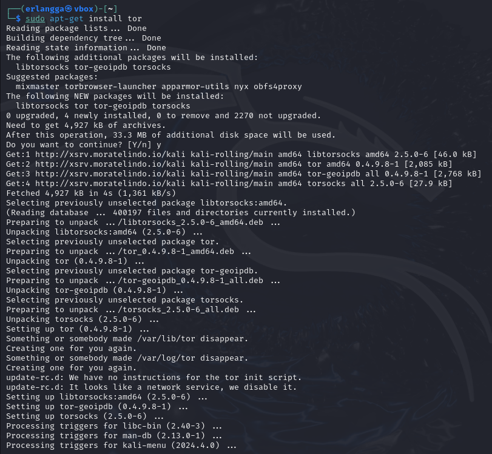
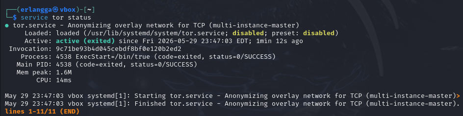
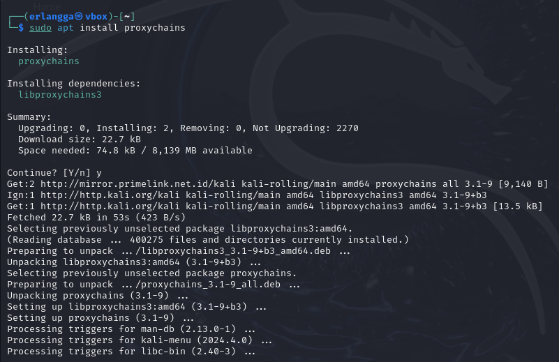
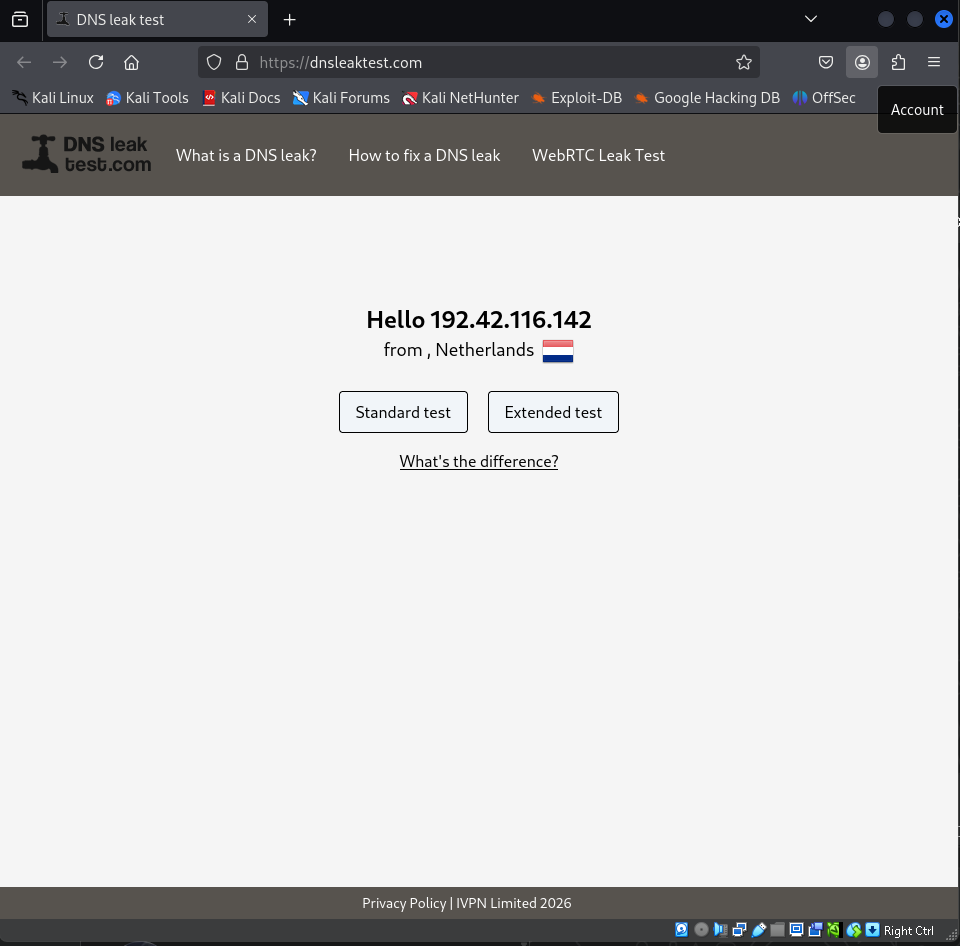
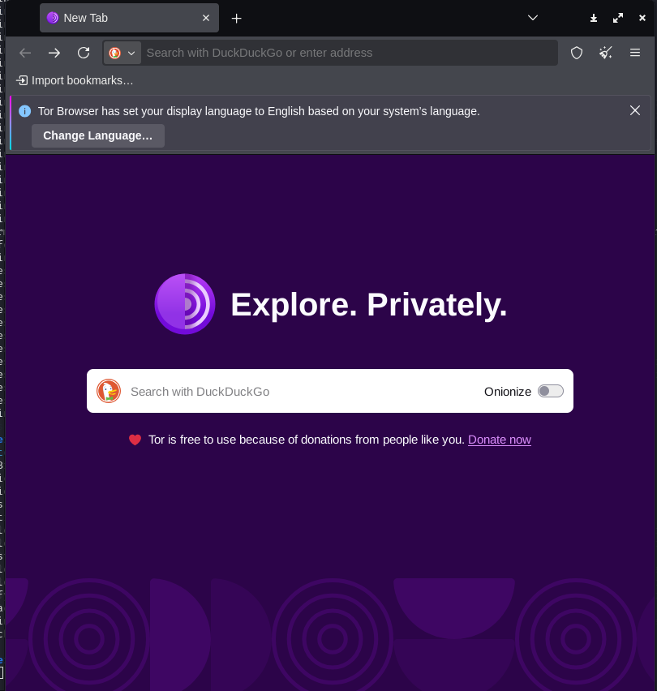

Tor Room Documentation: Setup, Proxychains, dan Tor Browser
Ditulis oleh Erlangga30 Mei 2026
Dokumentasi ini merangkum proses dasar penggunaan Tor pada lingkungan pembelajaran cybersecurity:
instalasi service Tor, konfigurasi Proxychains, pengecekan koneksi, sampai setup Tor Browser dengan
mode keamanan yang lebih aman.
Langkah awal adalah memasang paket Tor pada sistem. Pada Kali Linux atau distro berbasis Debian,
service Tor dapat dipasang melalui terminal menggunakan perintah instalasi paket. Setelah proses
selesai, service Tor siap dijalankan sebagai jalur koneksi anonim untuk kebutuhan lab.
Jawaban
1.1 Jalankan apt-get install tor untuk install atau update paket Tor. No answer needed.

Instalasi paket Tor melalui terminal.
Step 2
Service Check: Start dan Status Tor
Setelah Tor terpasang, jalankan service Tor lalu cek statusnya. Pemeriksaan ini memastikan service
aktif dan tidak gagal saat dijalankan. Jika status sudah aktif, konfigurasi berikutnya dapat
dilanjutkan ke penggunaan proxy.
Jawaban
1.2 Jalankan service tor start untuk memulai service Tor. No answer needed.
1.3 Jalankan service tor status untuk mengecek status service. No answer needed.
1.4 Jalankan service tor stop untuk menghentikan service Tor. No answer needed.

Pengecekan status service Tor.
Step 3
Configuration: Install Proxychains
Proxychains digunakan untuk memaksa koneksi TCP dari aplikasi tertentu melewati proxy seperti Tor.
Pada tahap ini, pasang Proxychains lalu siapkan konfigurasi seperti dynamic_chain dan
pengaturan proxy agar aplikasi dapat diarahkan melalui jaringan Tor.
Jawaban
2.1 Jalankan apt install proxychains untuk install atau update Proxychains. No answer needed.
2.2 Edit konfigurasi dengan nano /etc/proxychains.conf. No answer needed.
2.3 Aktifkan dynamic_chain, nonaktifkan chain lain bila perlu, lalu aktifkan proxy_dns untuk mengurangi risiko DNS leak. No answer needed.

Instalasi Proxychains untuk routing koneksi melalui proxy.
Step 4
Verification: DNS Leak Test
Setelah browser dijalankan melalui Proxychains, validasi koneksi dengan situs pengecek DNS leak.
Tujuannya adalah memastikan alamat IP dan DNS yang terlihat bukan lagi koneksi asli dari perangkat,
sehingga konfigurasi proxy bekerja sesuai kebutuhan lab.
Jawaban
2.4 Start Tor service lalu jalankan browser dengan proxychains firefox. No answer needed.
2.5 Cek perubahan IP dan DNS melalui situs seperti dnsleaktest.com. No answer needed.

Validasi DNS leak setelah koneksi diarahkan melalui Tor.
Step 5
Final Setup: Jalankan Tor Browser
Tahap terakhir adalah menjalankan Tor Browser dan mengatur level keamanan ke mode yang lebih aman.
Tor Browser membantu menyamarkan fingerprint browser dan mengarahkan trafik melalui jaringan Tor
secara langsung, sehingga lebih praktis untuk aktivitas browsing berbasis privasi.
Jawaban
3.1 Selesaikan instalasi Tor Browser. No answer needed.
3.2 Jalankan Tor Browser dan atur privacy/security level ke Safer. No answer needed.
3.3 Search engine pada alamat onion yang diberikan adalah DuckDuckGo.

Tor Browser siap digunakan untuk browsing melalui jaringan Tor.